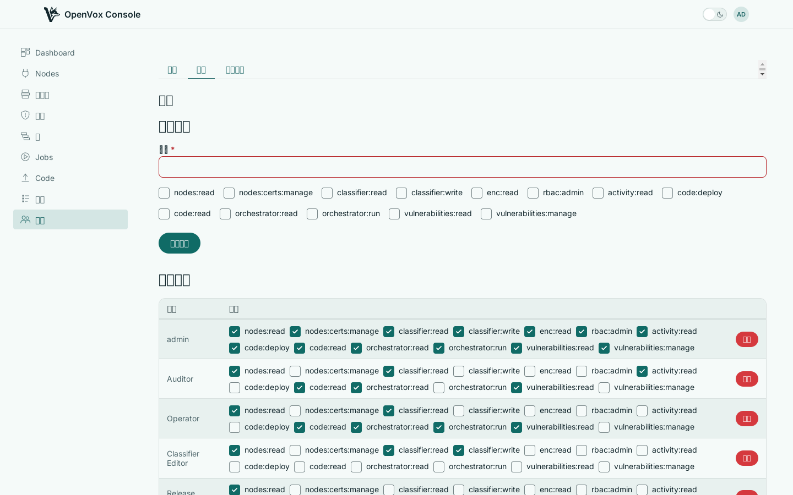
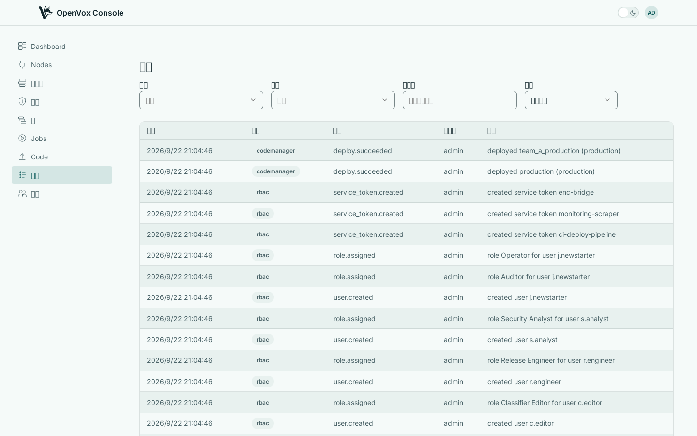

给每个人恰好所需的访问权限，给你的自动化专属的凭据，并记录每一次变更。
角色即权限集合
角色是一组有名称的权限——读取 Nodes、deploy 代码、运行编排、管理漏洞提供方。给一个人分配一个或多个角色。他们只看到角色覆盖的那部分控制台，除此之外什么都看不到：不会有点击后失败的按钮。

点名到人的审计记录
每条记录都写明了何人何时所为，于是「谁改了这个分组」成了一个有答案的问题。由计划任务或控制台自身完成的工作会如实标注，而不会被记在某个占位账号头上。

会话生命周期很短并在后台续期，因此泄露的令牌会自行失效。当你需要立刻把某人请出去时，吊销其会话会同时在每一个控制台实例上生效，而不必等待它过期。
OpenVox Console 以两个容器镜像的形式发布，每次 push 都会为 amd64 和 arm64 构建。SETUP.md 会带你完成一次真实部署——openvoxserver、openvoxdb、Postgres 和控制台——同时给出容器和软件包两种说明。